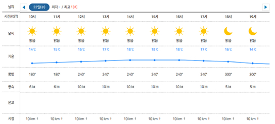

항공날씨정보
국내공항 여행 날씨
"너무 더워요 조심하세요"
햇빛쨍쨍
28.8℃
체감(32.3℃)

- 풍향 : 동남
- 풍속 : 12 kt
- 시정 : 10 km ↑
- 운고 : 1,500 ft
- 일강수 : - mm

"오늘 대체로 맑음"
구름조금
24.8℃
체감(28.3℃)
- 풍향 : 북서
- 풍속 : 6 kt
- 시정 : 10 km ↑
- 운고 : 1,500 ft
- 일강수 : - mm
| 김포 - 제주 도착 정보 | ||||||
|---|---|---|---|---|---|---|
| 항공사 | 편명 | 출발지 | 목적지 | 계획 | 예상 | 현황 |
| 진에어 | LJ509 | 서울/김포 | 제주 | 14:00 | 14:10 | 도착 |
| 대한항공 | KE1107 | 서울/김포 | 제주 | 14:00 | 13:56 | 도착 |
| 티웨이항공 | TW789 | 서울/김포 | 제주 | 14:00 | 14:46 | 출발 |
| 제주항공 | 7C155 | 서울/김포 | 제주 | 14:00 | 14:14 | 출발 |
| 아시아나항공 | OZ8951 | 서울/김포 | 제주 | 14:10 | 14:13 | 도착 |
| 티웨이항공 | TW785 | 서울/김포 | 제주 | 14:15 | 14:23 | 도착 |
| 제주항공 | 7C121 | 서울/김포 | 제주 | 14:20 | 14:26 | 도착 |
| 제주항공 | 7C125 | 서울/김포 | 제주 | 14:25 | 14:40 | 출발 |
| 대한항공 | KE1113 | 서울/김포 | 제주 | 14:30 | 14:46 | 도착 |
| 제주항공 | 7C123 | 서울/김포 | 제주 | 14:35 | 14:36 | 도착 |
| 아시아나항공 | OZ8953 | 서울/김포 | 제주 | 14:35 | 14:32 | 도착 |
| 대한항공 | KE1121 | 서울/김포 | 제주 | 14:40 | 14:39 | 도착 |
| 이스타항공 | ZE219 | 서울/김포 | 제주 | 14:40 | 15:01 | 출발 |
| 대한항공 | KE1143 | 서울/김포 | 제주 | 14:55 | 14:55 | 출발 |
| 이스타항공 | ZE221 | 서울/김포 | 제주 | 15:00 | 15:30 | 출발 |
| 에어서울 | RS905 | 서울/김포 | 제주 | 15:05 | 14:59 | 도착 |
| 제주항공 | 7C127 | 서울/김포 | 제주 | 15:05 | 15:05 | 출발 |
| 아시아나항공 | OZ8963 | 서울/김포 | 제주 | 15:10 | 15:20 | 출발 |
| 아시아나항공 | OZ8021 | 서울/김포 | 제주 | 15:15 | 15:15 | 출발 |
| 에어부산 | BX8021 | 서울/김포 | 제주 | 15:15 | 15:15 | 출발 |
| 티웨이항공 | TW793 | 서울/김포 | 제주 | 15:15 | 15:15 | 출발 |
| 티웨이항공 | TW789 | 서울/김포 | 제주 | 15:15 | 15:37 | 출발 |
| 진에어 | LJ511 | 서울/김포 | 제주 | 15:20 | 15:20 | 출발 |
| 이스타항공 | ZE275 | 서울/김포 | 제주 | 15:20 | 15:25 | 출발 |
| 이스타항공 | ZE223 | 서울/김포 | 제주 | 15:35 | 15:35 | 출발 |
| 제주항공 | 7C129 | 서울/김포 | 제주 | 15:35 | 15:55 | 출발 |
| 제주항공 | 7C131 | 서울/김포 | 제주 | 15:55 | 15:55 | 출발 |
| 이스타항공 | ZE221 | 서울/김포 | 제주 | 16:20 | 16:20 | 출발 |
| 아시아나항공 | OZ8963 | 서울/김포 | 제주 | 16:25 | 16:25 | 출발 |
| 이스타항공 | ZE225 | 서울/김포 | 제주 | 16:25 | 16:25 | 도착 |
| 대한항공 | KE1165 | 서울/김포 | 제주 | 16:35 | 16:35 | 도착 |
| 이스타항공 | ZE275 | 서울/김포 | 제주 | 16:45 | 16:45 | 출발 |
| 제주항공 | 7C133 | 서울/김포 | 제주 | 16:45 | 16:45 | 도착 |
| 티웨이항공 | TW795 | 서울/김포 | 제주 | 17:10 | 17:10 | 도착 |
| 아시아나항공 | OZ8981 | 서울/김포 | 제주 | 17:25 | 17:25 | 도착 |
| 대한항공 | KE1177 | 서울/김포 | 제주 | 17:30 | 17:30 | 도착 |
| 티웨이항공 | TW743 | 서울/김포 | 제주 | 17:30 | 17:30 | 도착 |
| 아시아나항공 | OZ8019 | 서울/김포 | 제주 | 17:40 | 17:40 | 도착 |
| 에어부산 | BX8019 | 서울/김포 | 제주 | 17:40 | 17:40 | 출발 |
| 티웨이항공 | TW797 | 서울/김포 | 제주 | 18:00 | 18:00 | 도착 |
| 에어서울 | RS907 | 서울/김포 | 제주 | 18:15 | 18:15 | 도착 |
| 티웨이항공 | TW799 | 서울/김포 | 제주 | 18:30 | 18:30 | 도착 |
| 진에어 | LJ513 | 서울/김포 | 제주 | 19:00 | 19:00 | 도착 |
| 티웨이항공 | TW735 | 서울/김포 | 제주 | 19:00 | 19:00 | 도착 |
| 진에어 | LJ515 | 서울/김포 | 제주 | 19:05 | 19:05 | 도착 |
| 아시아나항공 | OZ8985 | 서울/김포 | 제주 | 19:15 | 19:15 | 출발 |

담당관리 예보과
전화번호 032-740-2800

대표전화. 032-222-3030 (평일 9:00~18:00, 야간휴일은 당직실 연결)(22382)인천광역시 중구 제2터미널대로 444, 제2합동청사 2층(2F-0023)
Copyright by 2021 Aviation Meteorological Office. ALL RIGHTS RESERVED.